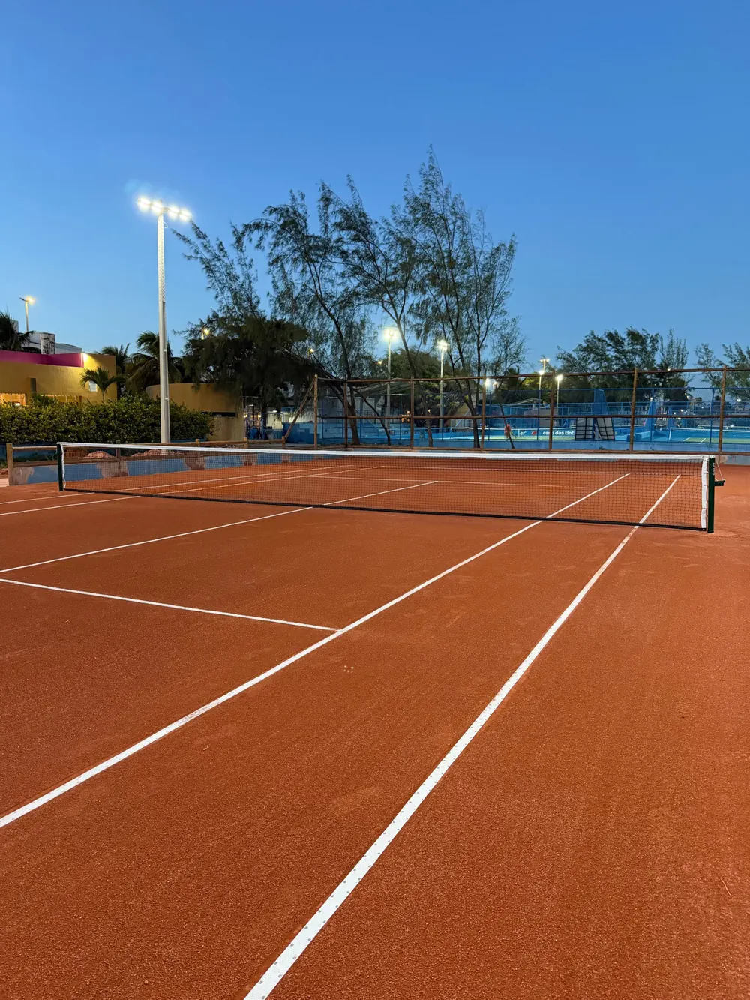

É perceptível o cuidado e a experiência da equipe em cada detalhe.
Engenharia esportiva
Quadras que elevam o jogo.
Construção, reforma e manutenção de quadras de tênis com padrão profissional, para condomínios, clubes, academias e residências.
5,0 no Google · 9 avaliações

Quem somos
Mais que quadras. Experiências.
Uma grande partida começa antes do primeiro saque: na textura do piso, na resposta da bola e na confiança de entrar em uma quadra preparada para o jogo.
A Quality Court nasceu da paixão do engenheiro civil Istanley Carvalho pelo tênis, e da vontade de construir quadras com o rigor técnico que o jogo merece.
ConsistênciaQuique uniforme em toda a superfície.
ConfortoPiso que absorve impacto.
PerformanceResposta no padrão dos torneios.
Serviços
Ver todos os serviços
Do terreno à primeira bola em jogo

Obra nova
Construção de quadras
Projeto e execução de quadras de tênis profissionais, da base ao acabamento.
Saiba mais →
Revitalização
Reforma de quadras
Recuperação completa de performance e estética para quadras desgastadas.
Saiba mais →
Rotina
Manutenção especializada
Serviços periódicos para manter a quadra em perfeitas condições de jogo.
Saiba mais →
Método Quality Court
Padrão técnico inspirado nos grandes torneios.
Cada quadra passa por seis etapas, do diagnóstico do terreno à entrega pronta para jogo. Nenhuma etapa começa antes de a anterior ser conferida.
- 01Diagnóstico
- 02Planejamento
- 03Base
- 04Execução
- 05Acabamento
- 06Entrega
Produtos
Tudo o que a sua quadra precisa
Saibro e pó cerâmico selecionados, redes, posts e itens de manutenção, com orientação de quem constrói quadras.
Quadras finalizadas
Ver todas as quadras
Quadras que já estão em jogo


Avaliações
5,09 avaliações no Google
O que dizem nossos clientes
Prazo, qualidade e profissionalismo de toda equipe.
Empresa de total confiança e presta um serviço excepcional!
Contato
Vamos conversar sobre sua quadra.
Conte o que você precisa: obra nova, reforma, manutenção ou material. Atendemos Aracaju e todo o Brasil.
WhatsApp
(79) 99193-5073
E-mail
comercial@qualitycourt.com.br
Endereço
R. José Francisco Prejuízo, 266 · Farolândia, Aracaju/SE